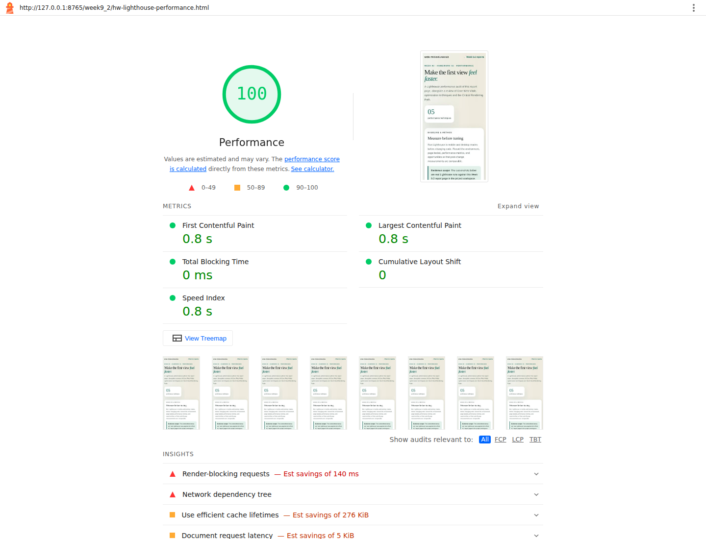
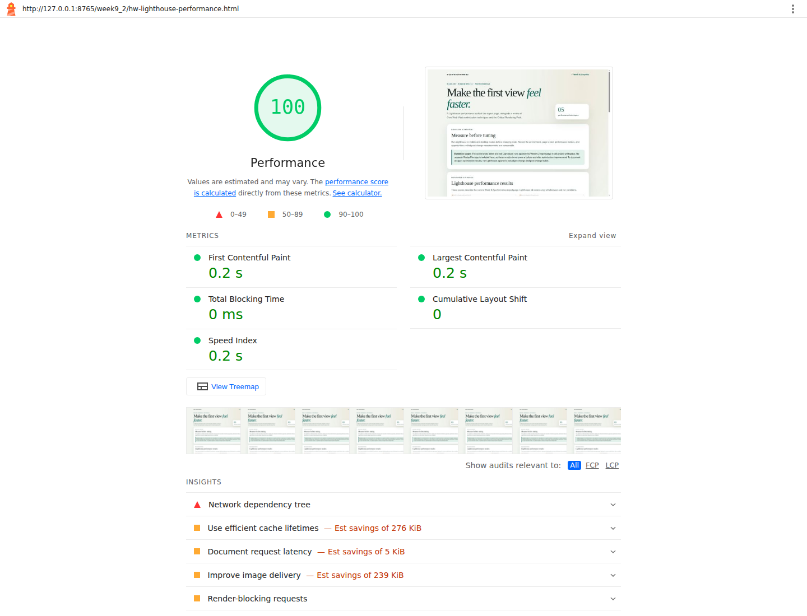

Serve the right image
Use modern formats where supported, responsive source candidates, and explicit dimensions to reduce transfer size and layout shift.
Week 09 · Homework 02 · Performance
A Lighthouse performance review of RecipePlan, examining mobile and desktop baselines, applying targeted Core Web Vitals improvements, and reflecting on the Critical Rendering Path.
Baseline & method
Run Lighthouse in mobile and desktop modes before changing code. Record the environment, page tested, performance metrics, and opportunities so that post-change measurements are comparable.
Evidence scope: The screenshots below are real Lighthouse runs against this Week 9.2 report page in the project workspace. They do not measure a separate RecipePlan app or prove a before-and-after optimization improvement. To document that app's optimization results, run Lighthouse against its actual pre-change and post-change builds.
Measured evidence
These scores describe the current Week 9.2 performance report page. Lighthouse lab scores vary with browser and run conditions.


Five applied improvements
Use modern formats where supported, responsive source candidates, and explicit dimensions to reduce transfer size and layout shift.
Lazy-load below-the-fold images while keeping the likely Largest Contentful Paint image eager and appropriately prioritized.
Use defer for scripts that need document parsing to finish; reserve async for independent scripts.
Minify production CSS and JavaScript, and remove code that the page does not use.
Apply long-lived immutable caching to fingerprinted static assets, with an appropriate revalidation policy for HTML.
Before & after · script loading
<!-- Before: parsing pauses while the script downloads and runs -->
<script src="app.js"></script>
<!-- After: download in parallel, execute after parsing -->
<script src="app.js" defer></script>Critical Rendering Path reflection
The browser must fetch and process the resources needed to render the first view. Large images, render-blocking CSS, and synchronous scripts can delay that work. Prioritizing critical content, reducing resource size, and deferring nonessential scripts shortens the path—while measurements confirm whether a change actually helped.
Keep baseline and post-change mobile and desktop reports with the same test conditions.
Review LCP, CLS, and INP alongside the Lighthouse opportunities and page behavior.
Document each code change, its expected effect, and any trade-off discovered during verification.